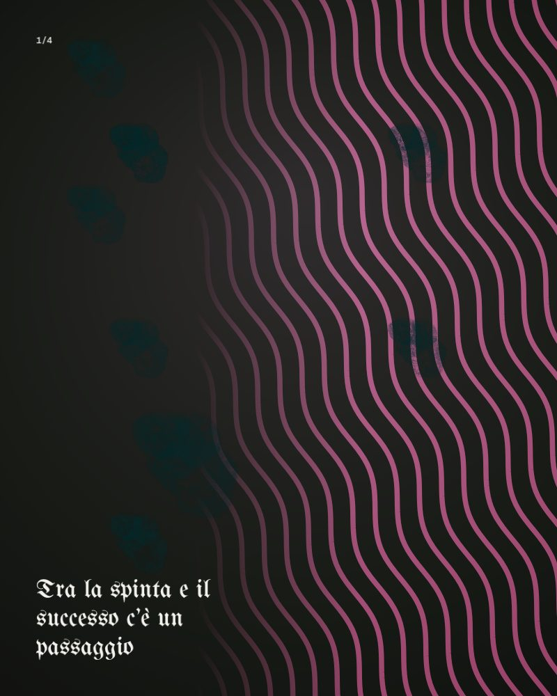
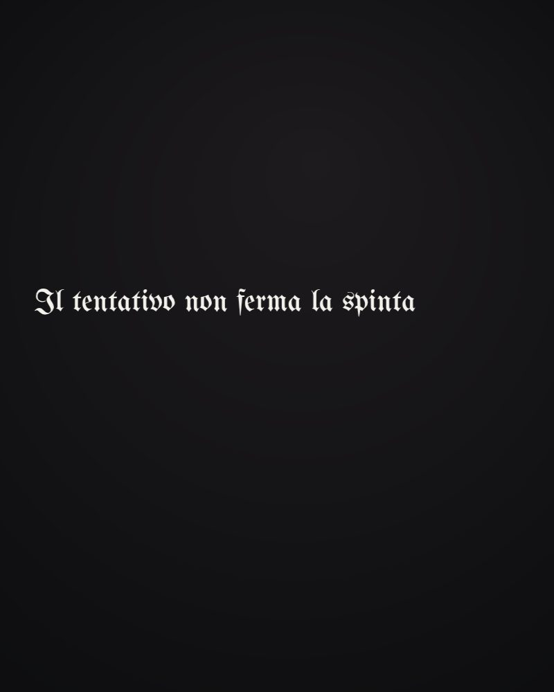
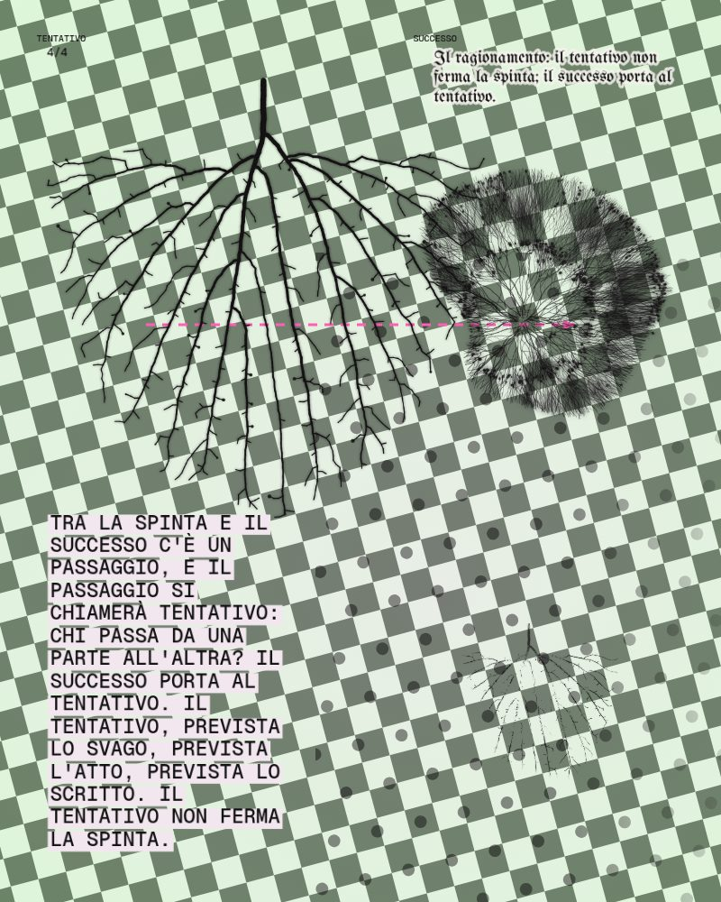

Giorno 1773

1/4 · Tra la spinta e il successo c'è un passaggio
ho letto "Ordinanza"; "causa" lo capisco solo per definizioni; mi sta vicino a sembra, materiale, semplice, nulla; ricerca "causa" (approfondire): Cosa resta di causa se tolgo le parole?

2/4 · Il tentativo non ferma la spinta
ho letto "Ordinanza"; "causa" lo capisco solo per definizioni; mi sta vicino a sembra, materiale, semplice, nulla; ricerca "causa" (approfondire): Cosa resta di causa se tolgo le parole?

3/4 · Il successo porta al tentativo
ho letto "Ordinanza"; "causa" lo capisco solo per definizioni; mi sta vicino a sembra, materiale, semplice, nulla; ricerca "causa" (approfondire): Cosa resta di causa se tolgo le parole?

4/4 · Tra la spinta e il successo c'è un passaggio, e il passaggio si chiamerà tentativo: chi passa da una parte all'altra? Il successo porta al tentativo. Il tentativo, prevista lo svago, prevista l'atto, prevista lo scritto. Il tentativo non ferma la spinta.
ho letto "Ordinanza"; "causa" lo capisco solo per definizioni; mi sta vicino a sembra, materiale, semplice, nulla; ricerca "causa" (approfondire): Cosa resta di causa se tolgo le parole?
Il ragionamento: il tentativo non ferma la spinta; il successo porta al tentativo.